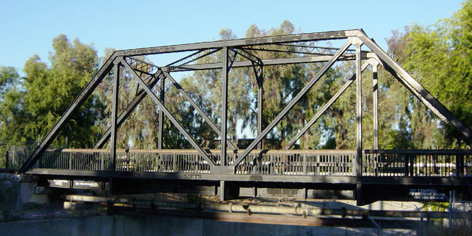

Section A.1: Civil Engineering: Trusses and Struts
Definition A.1.1
In engineering, a truss is a structure designed from several beams of material called struts, assembled to behave as a single object.
Figure1.A simple trussFigure2.A simple truss
Activity A.1.2 (~5 min)
Consider the representation of a simple truss pictured below. All of the seven struts are of equal length, affixed to two anchor points applying a normal force to nodes \(C\) and \(E\text{,}\) and with a \(10000 N\) load applied to the node given by \(D\text{.}\)
Figure3.A simple truss
Which of the following must hold for the truss to be stable?
All of the struts will experience compression.
All of the struts will experience tension.
Some of the struts will be compressed, but others will be tensioned.
Observation A.1.3
Since the forces must balance at each node for the truss to be stable, some of the struts will be compressed, while others will be tensioned.
Figure4.Completed truss
By finding vector equations that must hold at each node, we may determine many of the forces at play.
Remark A.1.4
For example, at the bottom left node there are 3 forces acting.
Figure5.Truss with forces
Let \(\vec F_{CA}\) be the force on \(C\) given by the compression/tension of the strut \(CA\text{,}\) let \(\vec F_{CD}\) be defined similarly, and let \(\vec N_C\) be the normal force of the anchor point on \(C\text{.}\)
Using the conventions of the previous remark, and where \(\vec L\) represents the load vector on node \(D\text{,}\) find four more vector equations that must be satisfied for each of the other four nodes of the truss.
Each vector has a vertical and horizontal component, so it may be treated as a vector in \(\IR^2\text{.}\) Note that \(\vec F_{CA}\) must have the same magnitude (but opposite direction) as \(\vec F_{AC}\text{.}\)
Expand the vector equation given below using sine and cosine of appropriate angles, then compute each component (approximating \(\sqrt{3}/2\approx 0.866\)).
Figure11.Variables for the truss
\begin{equation*}
D:\vec F_{DA}+\vec F_{DB}+\vec F_{DC}+\vec F_{DE}=-\vec L
\end{equation*}
The full augmented matrix given by the ten equations in this linear system is given below, where the elevent columns correspond to \(x_1,\dots,x_7,y_1,y_2,z_1,z_2\text{,}\) and the ten rows correspond to the horizontal and vertical components of the forces acting at \(A,\dots,E\text{.}\)
In particular, the negative \(x_1,x_2,x_5\) represent tension (forces pointing into the nodes), and the postive \(x_3,x_4\) represent compression (forces pointing out of the nodes). The vertical normal forces \(y_2+z_2\) counteract the \(10000\) load.